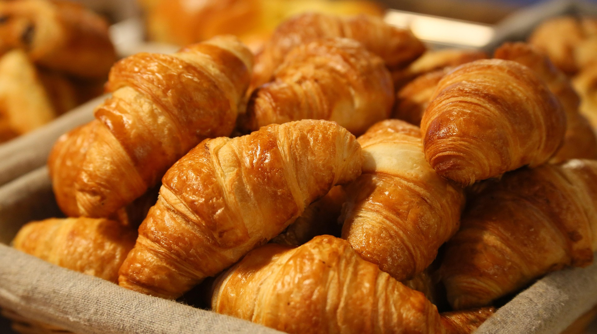
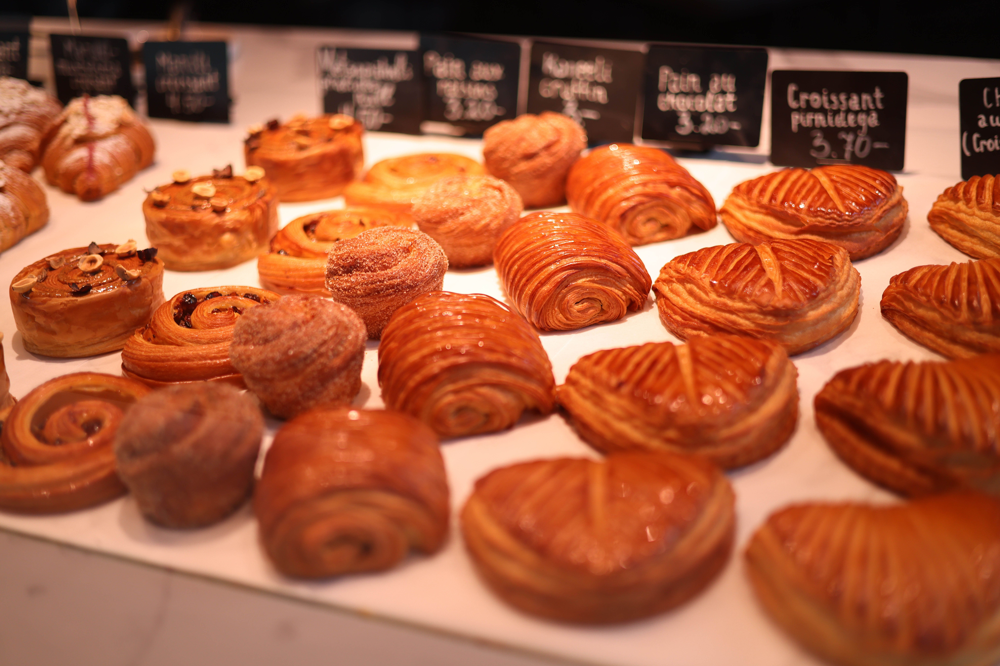

Nos pains
Découvrez notre sélection de pains artisanaux, préparés avec soin et passion.

Le Fournil est une boulangerie artisanale,où la
passion du pain et de la pâtisserie se rencontre pour
créer des délices faits maison. Venez découvrir nos délicieux
produits de boulangerie et pâtisserie faits maison.

Au Fournil, nous mettons notre passion et notre expérience au
service de la qualité. Nos pains, viennoiseries et pâtisseries
sont préparés chaque jour selon des méthodes artisanales pour
vous offrir des saveurs authentiques et un goût incomparable.

Découvrez notre sélection de pains artisanaux, préparés avec soin et passion.